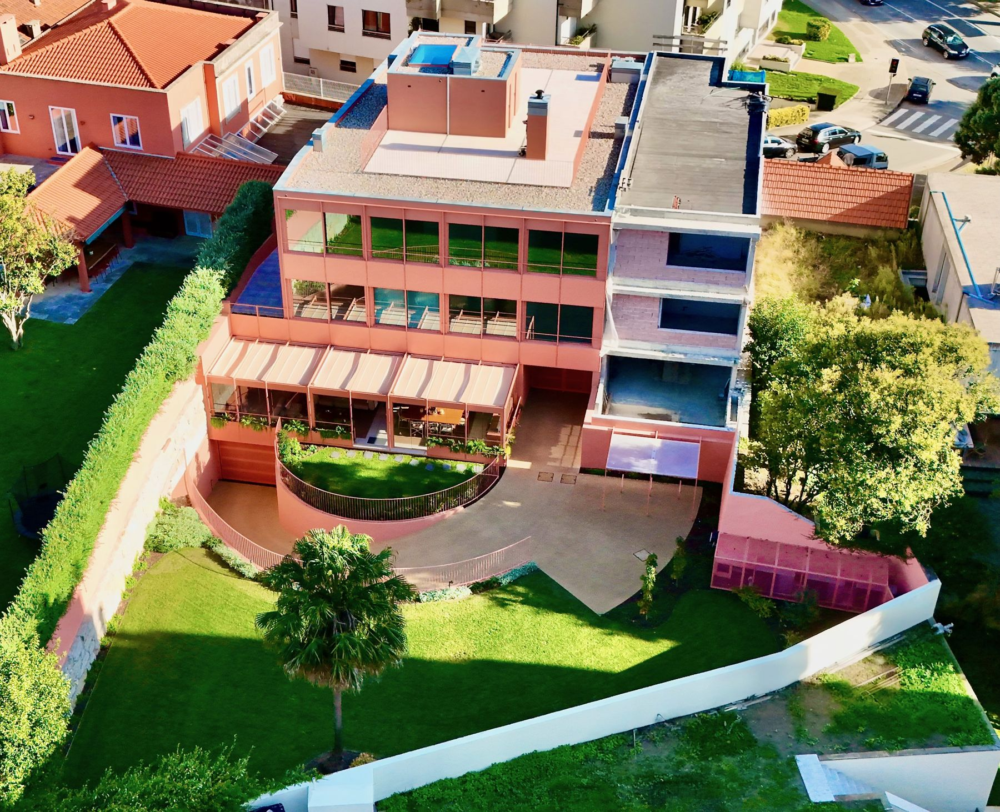
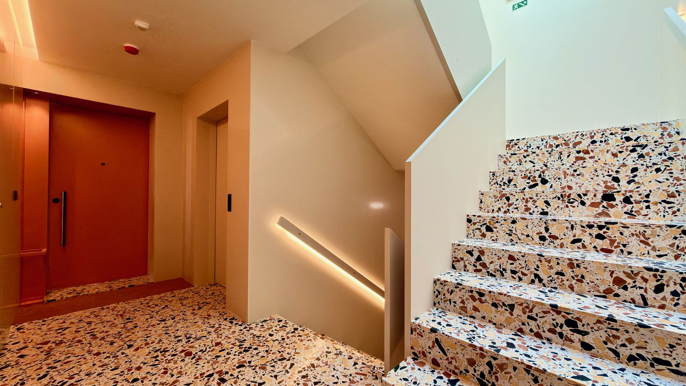

Condomínio Coral
Deux appartements de quatre chambres (T4+1) à Foz do Douro
Présenté par Cheila Monteiro · CENTURY 21 Arquitectos II
« Certains quartiers de Porto n’ont pas besoin d’être présentés. Foz do Douro en fait partie — et c’est pourquoi chaque opportunité ici a un poids particulier sur le marché. »
Deux logements T4+1 qui réunissent tout ce qu’une famille exigeante recherche : emplacement, qualité de vie, finitions haut de gamme et des terrasses qui font la différence.
Découvrez le Condomínio Coral en vidéo
Proche de tout ce qui compte
Deux minutes à pied séparent ces appartements de l’Université Catholique et de l’Oporto British School (OBS). Le Jardim do Passeio Alegre est à six minutes, les plages de Foz à moins de dix. Un emplacement idéal pour les familles avec enfants, les professionnels internationaux et les investisseurs qui connaissent la demande constante de ce quartier.
Voir sur la carte


Foz do Douro est l’un des quartiers les plus prisés de Porto : le front de mer atlantique, les plages, le Jardim do Passeio Alegre et le phare de Felgueiras à l’embouchure du fleuve. Rues paisibles, villas classiques, restaurants et terrasses face à la mer — le tout à quelques minutes du Condomínio Coral.
Le fort de São Francisco Xavier et la plage, sur le front de mer de Foz.


Architecture contemporaine, jardin privé
Construction neuve, avec un espace extérieur de loisirs paysager, des parties communes en terrazzo avec éclairage intégré et un garage fermé.




Pensé dans les moindres détails
Avec une distribution intelligente et des finitions de grande qualité, chaque appartement a été pensé dans les moindres détails pour offrir un confort et un raffinement optimaux. Quatre grandes suites, toutes avec dressing, garantissent intimité et bien-être à toute la famille. L’espace de vie est vaste, lumineux et fonctionnel, avec un élégant séjour ouvert sur une cuisine moderne entièrement équipée — idéale pour recevoir, partager et profiter du plaisir de cuisiner.
« Les finitions parlent d’elles-mêmes. »
Marbre d’un seul tenant dans les salles de bains, plancher chauffant, menuiseries minimalistes aux larges ouvertures et climatisation performante, avec un certificat énergétique A. Chaque détail a été pensé pour que ces appartements soient confortables, durables et intemporels.


Les intérieurs sont identiques. Ce qui distingue chaque appartement, c’est sa terrasse.
Dans les deux, le séjour s’ouvre sur un balcon donnant accès à la terrasse, complétée par l’espace extérieur de loisirs paysager de la résidence.
2e étage · terrasse latérale
Une terrasse latérale en L, spacieuse et intime, le long du séjour et des suites — prête à prendre la forme que vous imaginez : repas en plein air, salon extérieur ou jardin.
- Surface habitable236 m²
- Surface brute373 m²
- Suites · salles de bains4 · 5
- Parking · énergie4 places · A
3e étage · toit-terrasse avec vue mer
« Une terrasse avec vue mer — l’élément qui définit ce bien. »
Au sommet de l’immeuble, un toit-terrasse avec vue sur la mer — le plus grand espace extérieur du Coral, idéal pour des moments uniques de détente et de convivialité.

- Surface habitable236 m²
- Surface brute315 m²
- Suites · salles de bains4 · 5
- Parking · énergie4 places · A
Espace de vie ouvert à l’ouest, quatre suites avec dressing à l’est et le noyau d’accès au centre. Plan illustratif avec mobilier de simulation.
| 2e étage | 3e étage | |
|---|---|---|
| Terrasse | Latérale, en L | Toit-terrasse |
| Vue | Environnement verdoyant | Vue mer |
| Surface brute | 373 m² | 315 m² |
| Intérieurs | T4+1 · 236 m² | T4+1 · 236 m² |
Les intérieurs sont identiques dans les deux appartements. Les prix et conditions d’achat sont présentés en personne par la consultante, lors d’une visite ou d’un rendez-vous.
À Foz do Douro, si près de la mer et avec ces finitions, de telles opportunités sont rares.

« Pour en savoir plus, organiser une visite ou comprendre tout le processus d’achat, je suis à votre disposition. Contactez-moi directement. »
Appel vers un réseau mobile portugais.